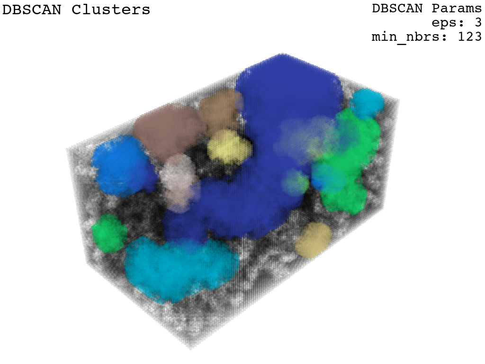
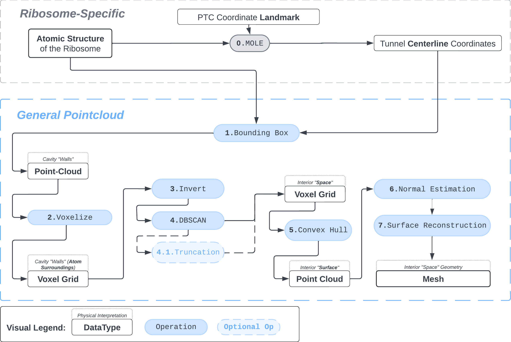
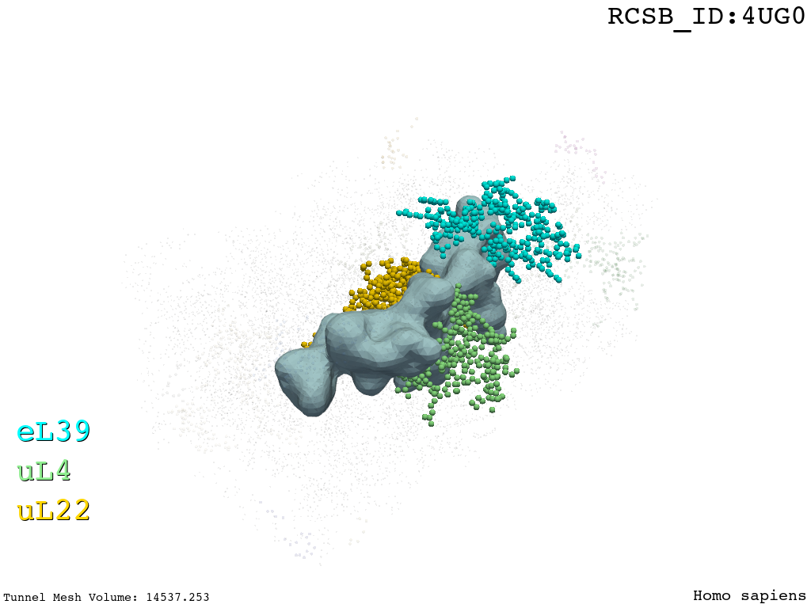

Summary and Background
We present a protocol to extract the surface of a biomolecular cavity for shape analysis and molecular simulations.
We apply and illustrate the protocol on the ribosome structure, which contains a subcompartment known as the ribosome exit tunnel. More details on the tunnel features and biological importance can be found in our previous works1,2. The protocol was also design to refine the output obtained from MOLE software3 (see Figure XXX)
Visual Protocol

1. Bounding Box
This step captures the subset of atoms enclosing the cavity of interest (the tunnel) from the original structure.
For each \(C_{x,y,z}\), capture atoms whose center belongs to the sphere formed by \(R_{x,y,z} + R_{\mathbf{expansion}}\), filter out duplicates. Call this coordinate set the \({\textit{Centerline Expansion Atoms}}\).
Calculate the coordinates of the bounding box \(B\) around the \(\text{\textit{Centerline Expansion Atoms}}\).
Apply \(B\) to the initial structure to extract all atoms that belong to \(B\). Call this \(\mathbf{pc^{B}}\).
Widen each coordinate (atom center) \(C_{x,y,z}^{pc_{B}}\) inside \(pc_{B}\) by \(R_{vdw}\) to include a more realistic representation of atoms. This is done by creating a voxel subgrid whose bounding cube is between \((C_{x}^{pc_{B}}-R_{vdw},C_{y}^{pc_{B}}-R_{vdw},C_{z}^{pc_{B}}-R_{vdw})\) and \((C_{x}^{pc_{B}}+R_{vdw},C_{y}^{pc_{B}}+R_{vdw},C_{z}^{pc_{B}}+R_{vdw})\), a cube of indices centered at \(C_{x,y,z}^{pc_{B}}\). The resultant coordinate set is \(\mathbf{pc_{B}}\).
Anchor the coordinates of the \(pc_{B}\) to the origin by subtracting the \(\mu(pc_{B})\) of the coordinate set from each \(C_{x,y,z}^{pc_{B}}\) and then shifting each \(C_{x,y,z}^{pc_{B}}\) upwards by \(|\min(x,y,z)|\). This is done to reduce the amount of empty voxel cells in the following steps, reduce compute.
2. Voxelization
Assume voxel size of \(1\) in correspondence to the units of the dataset, Angstroms in our case. (Alternatively, atom-to-sphere expansion in step 1. Bounding Box should be accordingly scaled).
Create a boolean voxel grid with the dimensions of the (\(pc_{B}\) + \(1\)), call this the \(Grid_{index}\) (as opposed to \(Grid_{coordinate}\))
Set voxels at index [\(C_{x},C_{y},C_{z}\)] for every \(C\) in \(pc_{B}\) in the \(Grid_{index}\) to \(1\). All other voxel are \(0\).
3. Inversion
Invert the \(Grid_{index}\) to create a representation of the “empty space” inside the exit tunnel.
4. DBSCAN
The aim in this step is to extract only the voxels belonging to the “empty space” inside the tunnel and no other. Given that we have a good idea of the Van der Waals radii of the atoms that constitute the walls and have control over the size of the voxel in the \(Grid_{index}\), one method that we can apply is DBSCAN.
DBSCAN is a density-based clustering non-parametric algorithm that is akin to UMAP/t-SNE.
5. Interior Surface via Delaunay Triangulation
The aim of this step is to extract a point cloud containing only the voxels on the surface of convex hull enclosing the interior space of the tunnel.
6. Normal Estimation & Orientation
The aim of this step is to prepare the convex hull point cloud for the surface reconstruction algorithm. For the final mesh to be smooth and free of artifacts, this step has to assign a normal vector point outwards at each point of the convex hull thus defining a clear boundary between “inner” and “outer” space vis-a-vis the surface.
One popular method for normal estimation is a KDTree search and for smoothing their orientations a collection of tangent planes is used.
7. Surface Reconstruction

References
1.
Dao Duc, K. & Song, Y. S. The impact of ribosomal interference, codon usage, and exit tunnel interactions on translation elongation rate variation. PLoS genetics 14, e1007166 (2018).
2.
Dao Duc, K., Batra, S. S., Bhattacharya, N., Cate, J. H. & Song, Y. S. Differences in the path to exit the ribosome across the three domains of life. Nucleic acids research 47, 4198–4210 (2019).
3.
Sehnal, D. et al. MOLE 2.0: Advanced approach for analysis of biomacromolecular channels. Journal of cheminformatics 5, 1–13 (2013).